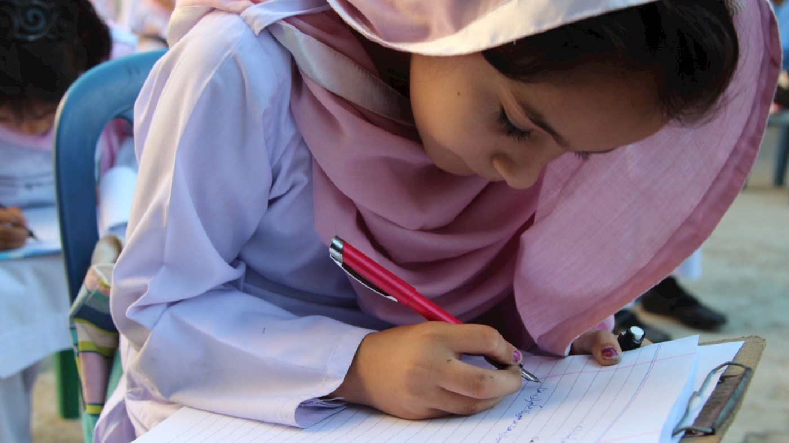
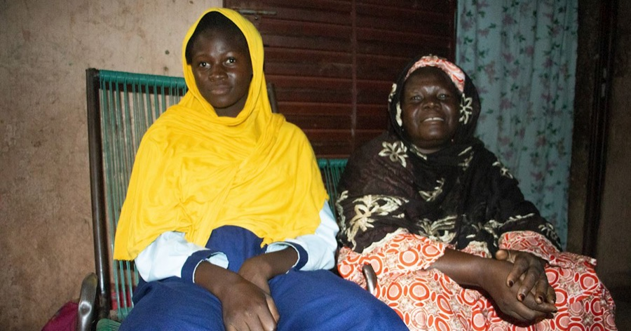
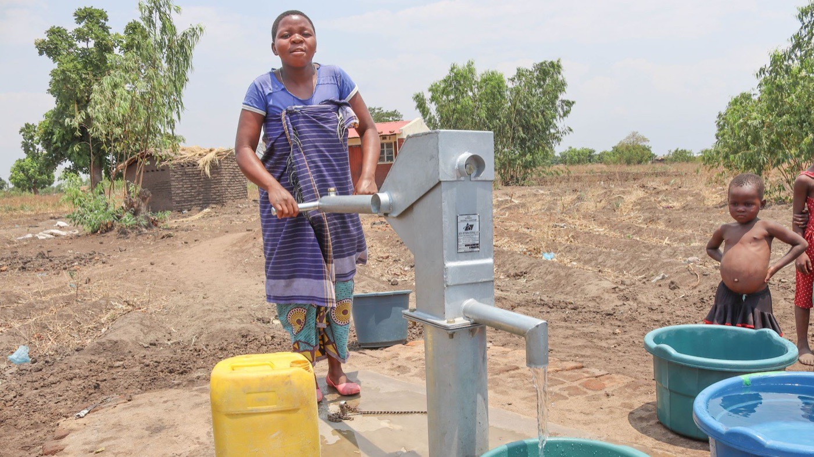
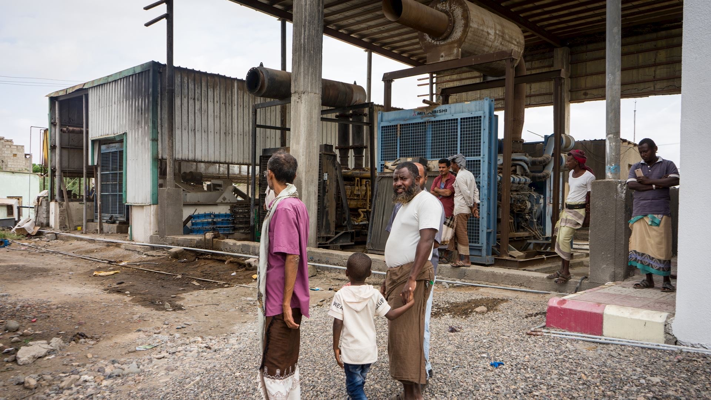

- 50 € : un colis alimentaire d'urgence pour une famille déplacée pendant un mois
- 100 000 € déjà confiés au Programme alimentaire mondial pour 8 122 personnes
- Éligible à la zakat · reçu fiscal immédiat, 66 % déductible
La situation au Liban aujourd'hui
Le Liban n'avait pas fini de relever les quartiers détruits par la guerre de l'automne 2024 quand les hostilités ont repris, le 2 mars 2026. En quelques semaines, les frappes sur le Sud-Liban, la Bekaa et la banlieue sud de Beyrouth ont déplacé 760 000 personnes selon les autorités libanaises, plus d'un million selon l'Organisation internationale pour les migrations, beaucoup pour la deuxième fois en deux ans. Plus de 3 000 civils ont été tués et 9 000 blessés depuis mars.
Un cessez-le-feu a été annoncé en avril, mais les frappes se poursuivent dans le sud et des centaines de milliers de personnes ne peuvent pas rentrer : villages détruits, terres inaccessibles. 129 000 personnes vivent encore dans 632 centres collectifs saturés, écoles et salles municipales, à l'approche de l'hiver. Tout cela dans un pays frappé depuis 2019 par une crise économique qui a fait basculer la majorité des habitants dans la pauvreté. Cette page est mise à jour chaque mois.

Urgence Liban
50 € vous coûtent 17 € après réduction d'impôt de 66 %.
Je donne pour le LibanÉligible à la zakat · reçu fiscal immédiat · paiement sécurisé
Comment l'aide arrive-t-elle au Liban ?
Au Liban, Muslim Hands France agit avec le Programme alimentaire mondial, à qui elle a confié 100 000 € en juillet 2026 : 4 061 foyers déplacés, soit 8 122 personnes, reçoivent des colis alimentaires d'urgence pendant un an. Les kits d'installation et d'hygiène sont achetés à Beyrouth et remis dans les centres collectifs par nos partenaires libanais, sur listes vérifiées avec les autorités locales et les mécanismes de coordination humanitaire. Dans le Akkar, au nord, le forage et le générateur d'eau solaire financés par nos donateurs alimentent un village d'accueil.
Collecte en France
Votre don rejoint le fonds Urgence Liban, tracé séparément. Les dons zakat sont fléchés vers les bénéficiaires éligibles.
Achat
Colis alimentaires via le PAM ; matelas, couvertures, lampes solaires et kits d'hygiène achetés à Beyrouth.
Distribution
Dans les centres collectifs et les communautés d'accueil du sud de Beyrouth, de la Bekaa et du Akkar, en priorité aux femmes seules, personnes âgées et handicapées.
Compte rendu
Listes, photos et factures remontent à Paris ; le bilan est publié dans les actualités et le rapport annuel.

Ce que fait Muslim Hands sur place
Colis alimentaires avec le PAM
Un an de colis d'urgence pour 4 061 foyers déplacés, distribués par le Programme alimentaire mondial.
Kits d'installation
Matelas, couvertures, oreillers, lampes solaires rechargeables pour les familles arrivées sans rien dans les centres collectifs.
Eau potable
Forage et générateur d'eau solaire dans le Akkar, eau en citerne pour les centres collectifs saturés.
Hygiène
Kits d'hygiène familiaux et produits pour bébés, contre les maladies qui se propagent dans les abris surpeuplés.
Hiver
Couvertures épaisses, vêtements chauds et chauffage pour les familles hébergées en altitude dans la Bekaa.
Enfants
Soutien psychosocial et fournitures scolaires pour les enfants déplacés, dont beaucoup ont perdu une deuxième année d'école.
Que finance mon don pour le Liban ?
Les montants ci-dessous sont nos coûts réels d'achat et de distribution à Beyrouth, revus chaque trimestre.
| Don | Ce qu'il permet | Fiche |
|---|---|---|
| 25 € | Un kit d'hygiène pour une famille déplacée | Donner |
| 50 € | Un colis alimentaire d'urgence pour une famille pendant un mois | Donner |
| 100 € | Un kit d'installation : matelas, couvertures, lampe solaire pour une famille en centre collectif | Donner |
| 150 € | De l'eau potable pour un centre collectif pendant un mois | Donner |
| 30 € | Un colis chaleur pour une famille hébergée en altitude (hiver) | Donner |
Pour un geste qui dure, un forage solaire dans un village d'accueil du Akkar sert aux déplacés et aux habitants pendant vingt ans.
Bilan de l'action au Liban depuis 2024
Depuis la guerre de l'automne 2024, le fonds Urgence Liban a financé des distributions alimentaires et des kits d'hygiène pour les familles déplacées, un forage et un générateur d'eau solaire dans le Akkar, puis, en juillet 2026, l'engagement de 100 000 € auprès du Programme alimentaire mondial pour nourrir 8 122 personnes pendant un an. Le bilan chiffré est publié dans le rapport annuel et dans les actualités.

« Nous avons quitté Nabatiyé en une nuit, sans rien. Le colis du mois et les matelas, c'est ce qui nous permet de tenir dans l'école où nous dormons à quarante. »Rana, mère de trois enfants, centre collectif de Beyrouth, septembre 2026
Votre don pour le Liban et vos impôts
Muslim Hands France est une association d'intérêt général : votre don pour le Liban ouvre droit à une réduction d'impôt sur le revenu de 66 %, dans la limite de 20 % du revenu imposable. 50 € vous coûtent 17 €, 150 € vous coûtent 51 €. Le reçu fiscal est envoyé par e-mail immédiatement après le paiement. Votre don peut aussi être votre zakat al maal. Tout savoir sur la déduction fiscale.

Questions fréquentes sur le don pour le Liban
Où intervenez-vous au Liban ?
Dans la banlieue sud de Beyrouth, le Sud-Liban et la plaine de la Bekaa, où arrivent les familles déplacées, et dans le Akkar, au nord, où nous avons financé un forage et un générateur d'eau solaire. Nous travaillons avec le Programme alimentaire mondial et des partenaires libanais.
Que finance mon don pour le Liban ?
25 € un kit d'hygiène pour une famille déplacée, 50 € un colis alimentaire d'urgence pour un mois, 100 € un kit d'installation pour une famille en centre collectif (matelas, couvertures, lampe solaire), 150 € de l'eau potable pour un centre collectif pendant un mois.
Comment l'aide arrive-t-elle au Liban ?
Les colis alimentaires sont distribués par le Programme alimentaire mondial, auquel Muslim Hands France a confié 100 000 € en juillet 2026 pour nourrir 8 122 personnes pendant un an. Les kits d'installation et d'hygiène sont achetés à Beyrouth et remis dans les centres collectifs par nos partenaires, sur listes établies avec les autorités locales.
Pourquoi le Liban a-t-il encore besoin d'aide en 2026 ?
La guerre a repris en mars 2026 : les autorités libanaises comptent 760 000 personnes déplacées, les agences humanitaires plus d'un million. Le cessez-le-feu d'avril n'a pas arrêté les frappes dans le sud, et une partie des familles ne peut pas rentrer, leurs villages étant détruits ou inaccessibles. Tout cela dans un pays déjà frappé par six ans de crise économique.
Mon don pour le Liban est-il déductible des impôts ?
Oui, à 66 % de son montant, dans la limite de 20 % du revenu imposable : 50 € vous coûtent 17 €. Le reçu fiscal est envoyé immédiatement par e-mail.
Puis-je donner ma zakat pour le Liban ?
Oui. Les familles déplacées par la guerre font partie des ayants droit de la zakat. Cochez la case « Zakat » lors du don : il rejoint le fonds zakat, tracé séparément.

Un colis par mois, pendant un an.
50 € nourrissent une famille déplacée pendant un mois, avec le Programme alimentaire mondial.
Offrir un colis alimentaire